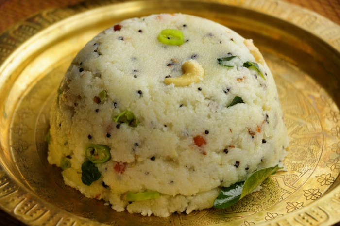

Sooji Upma

Upma is a warm, homemade breakfast can be
made relatively quickly, especially with this one easy tip.
In the step-by-step photo guide below, you will see the first
few steps of roasting the rava (cream of wheat).This can easily
be done ahead of time and I actually recommend roasting your
rava and keeping it in an air-tight container right after
purchase. This will help it stay good longer and prevent it
from becoming moldy or spoiled.
Ingredients
- ⅓ cup finely chopped onions
- 1 teaspoon chopped green chillies and 1 teaspoon finely
chopped ginger
- 8 to 10 curry leaves and 10 to 12 cashews
- 1 teaspoon chana dal (hulled and split bengal gram)
- 1 teaspoon urad dal (hulled and split black gram
How To Make Upma
- Heat a pan or kadai first. Add 1 cup rava or cream of
wheat (fine variety).Begin to roast the rava.
Stir often while roasting the rava.
- The rava or sooji grains should become fragrant and start
to look dry, separate and crisp. Don't brown the rava.
- Once the rava becomes fragrant and starts to look dry
and crisp, switch off the flame and put the roasted
rava on a plate and set aside.
- In a pan, heat 2 tablespoons ghee (clarified butter) or oil.
You could use sunflower oil or peanut oil or safflower oil
or any neutral tasting oil.
- Lower the heat. Add 1 teaspoon mustard seeds.
When you hear the crackling sound of mustard seeds,
it means they are getting fried.
- Now add the ½ teaspoon cumin seeds along with 1 teaspoon
chana dal (husked and split bengal gram) and 1 teaspoon
urad dal (husked and split black gram).
- Stirring often fry until the chana dal and urad dal begin
to brown a bit.mmediately add 10 to 12 cashews and begin
to fry on a low to medium-low heat.By the time the cashews
get golden the dals should also be golden.
- Now add the finely chopped onions. Sauté the onions until
they soften and become translucent on a low to medium-low
heat.
- Then add the chopped green chillies, ginger and curry leaves.
You can also add 1 dried red chilli at this step.Mix well &
sauté for a few seconds.
- Baaki Ki Kahi se padh lo yeh khali proof of concept hai :)